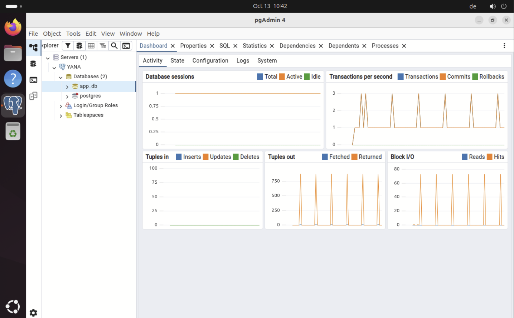

PostgreSQL 16 und pgAdmin 4¶
1. PostgreSQL installieren¶
sudo apt update
sudo apt install postgresql postgresql-contrib -y
Auf Ubuntu 24.04 wurde PostgreSQL 16 eingesetzt. Anschließend den Zustand prüfen:
sudo systemctl status postgresql
pg_lsclusters
Der Sammeldienst postgresql.service kann active (exited) zeigen, obwohl die eigentliche Cluster-Instanz aktiv ist. Maßgeblich ist bei pg_lsclusters der Zustand online. Dieser wurde im Projekt bestätigt.
2. Eigene Datenbank und Rolle anlegen¶
sudo -u postgres psql
Beispiel-SQL im psql-Prompt (mit selbstgewähltem Geheimnis):
CREATE USER app_user WITH PASSWORD 'PASSWORT_NUR_LOKAL_EINSETZEN';
CREATE DATABASE app_db OWNER app_user;
\l
\q
Sicherheitsregel: Das oben gezeigte Passwort ist kein echtes Passwort, sondern ein Platzhalter. Für die reale Einrichtung ein einzigartiges Passwort verwenden und nur im eigenen Secret-Speicher hinterlegen; niemals in GitHub veröffentlichen. Zum sicheren, interaktiven Ändern eines bereits angelegten Passworts kann
\password app_userimpsql-Prompt verwendet werden.
Verbindung lokal testen:
psql -h 127.0.0.1 -U app_user -d app_db
Erwartet: Passwortabfrage und Prompt app_db=>.
3. pgAdmin 4 Desktop installieren¶
Es wurde die Desktop-Variante gewählt, da GNOME bereits vorhanden ist und die Verwaltung über die IONOS-Konsole erfolgt.
sudo apt install curl gnupg -y
sudo mkdir -p /etc/apt/keyrings
curl -fsS https://www.pgadmin.org/static/packages_pgadmin_org.pub \
| sudo gpg --dearmor -o /etc/apt/keyrings/packages-pgadmin-org.gpg
sudo sh -c 'echo "deb [signed-by=/etc/apt/keyrings/packages-pgadmin-org.gpg] https://ftp.postgresql.org/pub/pgadmin/pgadmin4/apt/$(lsb_release -cs) pgadmin4 main" > /etc/apt/sources.list.d/pgadmin4.list'
sudo apt update
sudo apt install pgadmin4-desktop -y
Offizielle Anleitung: https://www.pgadmin.org/download/pgadmin-4-apt/.
4. PostgreSQL in pgAdmin registrieren¶
- pgAdmin 4 über die GNOME-Anwendungsübersicht starten.
- Unter Servers → Register → Server einen lokalen Servereintrag erstellen.
- Im Tab Connection diese Werte setzen:
| Feld | Wert |
|---|---|
| Anzeigename | YANA (frei wählbar) |
| Host | localhost oder 127.0.0.1 |
| Port | 5432 |
| Maintenance database | app_db |
| Username | app_user |
| Password | Nicht dokumentieren / lokal hinterlegen |
Die Verbindung wurde erfolgreich getestet. Unter Servers → YANA → Databases → app_db lassen sich die Tabellen und das Query Tool öffnen.

Abbildung: pgAdmin-Oberfläche nach erfolgreicher PostgreSQL-Anbindung.
5. Datenbankschema einspielen¶
Die Tabellen wurden mit einem SQL-Skript im Query Tool erstellt: app_db auswählen → Rechtsklick → Query Tool → SQL einfügen → F5. Das vollständige Schema und die bereits eingefügten Testdaten befinden sich in Datenmodell und SQL.
Sicherheit¶
- Der Datenbankport 5432/TCP bleibt extern geschlossen.
- FastAPI greift über
127.0.0.1auf PostgreSQL zu. - Die Datenbankzugangsdaten liegen lokal in einer geschützten
.env-Datei, nicht im Quellcode. - Datenbankrollen für Schreib-/Lesezugriff später differenzieren; derzeit ist
app_userEigentümer der Datenbank.